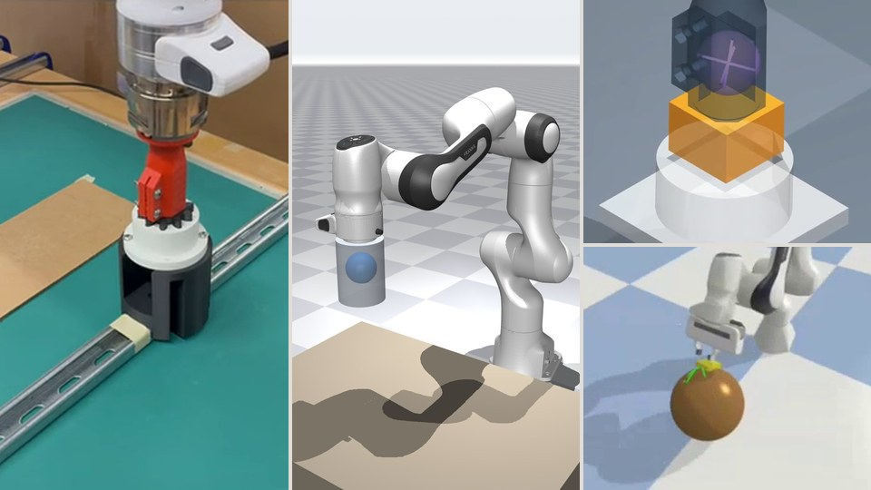
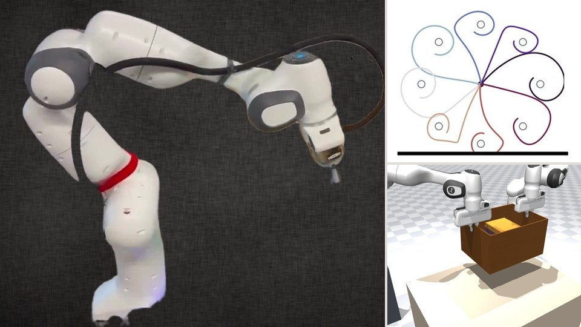

Research
From a few demonstrationsLearn the skillContact-rich skills, practiced and checked in simulation.Learning Contact-Rich Skills
Through safe practiceImprove itReinforcement learning under safety constraints.Safe Variable Impedance RL
Over a lifetimeKeep adaptingRecall the right skill as body and task change.Self-Confirming SelectionA Neural Network Motor Cortex
Papers, Projects and Writing

Papers 3 papers Keeping a robot safe while it learns how stiff to be, learning contact-rich skills from a few demonstrations, and why modular robot memories fail to recall. Open →
Projects 2 projects A neural-network motor cortex that adapts to a force field the way people do, and two robot arms that learn how hard to hold everyday objects. Open → Writing
33 notes
Literature reviews on how the brain controls movement and what robots can learn from it,
fundamentals of the computers and maths behind robot learning, and short maths notes.
Open →
Writing
33 notes
Literature reviews on how the brain controls movement and what robots can learn from it,
fundamentals of the computers and maths behind robot learning, and short maths notes.
Open →
Open source
Fixes and features I have contributed to the simulators I use.
Work Experience
Achievements
3rd place, Revolute: Boston’s first Physical AI hackathon
4th worldwide, Robotic Grasping and Manipulation Competition, simulation sorting track
5th worldwide and 3rd in Asia, RoboCup ARM Challenge
Contact
I’m happy to talk about robots that work by touch, safe robot learning, how the brain controls movement, or a simulator bug you have run into.